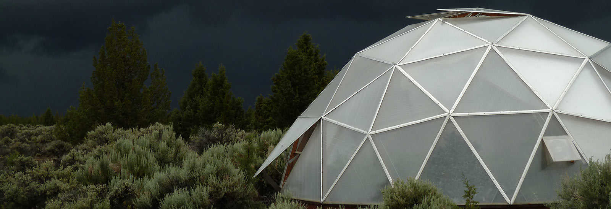

"Come on down and get your
homegrown at Dome Grown"
Phone Number: 541-678-3064


- 

Welcome to Dome Grown Produce
After living in Colorado for six years, then moving to Oregon almost 10 years ago, and a few odd jobs later, I have finally landed at my farm. My excitement for growing and eating fresh vegetables was renewed after moving to an area that has a more temperate climate than the mountains of Colorado.Since moving here I have been growing flowers, vegetables, and herbs organically.The first garden was a mere 4’x8’ raised bed and now I get to talk in acres. I learned a lot about the area by working at a garden center for six years.
Dome Grown Produce
7858 SW 61st St.
Redmond, OR 97756
541-678-3064
Our Beautiful Farm
In 2010, my husband and I purchased our first greenhouse and this was when Dome Grown Produce was born. It’s a 26’ geodesic dome kit that utilizes passive solar technology and unique undersoil heating tubes in raised beds. This helps us grow vegetables year round. We disassembled and moved the dome to our new 20 acre farm in the summer of 2013, where we continue growing today. Moving in the summer, pregnant with our son Emmett, and expanding a tiny business all at the same was a little hectic. We built another hoop-house, a big chicken run, and planted an orchard. This spring we are starting our first official CSA. We continue to clean up the property which had been neglected and overgrazed. We will continue to fight the weeds that pop up everywhere. We will continue to be stewards of our property the way I learned back in school. We will also continue to produce good organic food and protect the land that we grow it on. After all this time I have finally made it back to my roots.
Community Supported Agriculture
Sign up here for CSA packages by downloading the brochure. Just print and mail today.